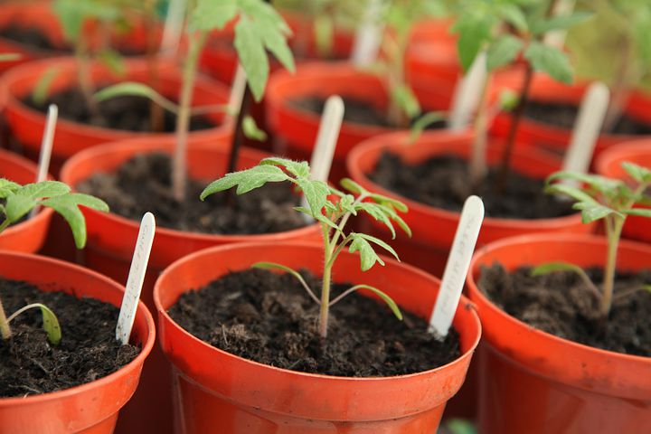

1. Be Conscious About your Energy usage
In almost every house around the world we humans have at least one source of energy. From the lamp you turn on to see clearer in the dark, to your fridge to cool and preserve your food. Of course there isn’t a problem with that, but when you turn on the many different electrical gadgets at the same time and let some gadget be untouched would that be described as irresponsible. To be more conscious and energy efficient then turn off all the lights in a room which isn’t used to you or other people, turn off the tv, stove, water tap, and everything else which you use electric energy in your everyday life. Not only are you more environmentally friendly, but you also save money from the energy you don’t need to use
2. Buy fewer items
If you buy fewer items which you don't need, wouldn’t you only save money, but you also doesn’t support companies which emit greenhouse gases, use labour or produce more waste than the actual product (depends on what the company produces, and what kind of market they're in).
3. Turn off the Tap
When you're brushing your teeth or using any kind of water, always turn it off when you're NOT using it. If you let the water go and aren't using the valuable resource in a responsible way, then you probably wouldn't like to see your water bills. If you save the water you use every day, and aren't irresponsible using it, then you would make a huge difference to yourself and the climate.

4. Take a shower in minimum 5 minutes
The 20 minutes you use in the shower is too much water and energy used just to be clean, or relaxing. Take a 5 minutes shower instead, research from the UN Association shows that a normal person can get clean in a minimum of 5 minutes. Try it out in your everyday life, and see for yourself.

5. Recycle
Recycling your waste is very important to cause littering, or throwing something in the wrong bin. The trash you recycle can later be used to make the same product you bought, or to something new. Remember to always recycle paper/ cardboard in the cardboard bin, plastic into the plastic bin, metal into the metal bin, and foodwaste into the foodwaste bin.
6. Eat all of your food completely
Let’s say you're eating an apple but only have eaten the half part of the apple. Sooner you just throw it away in the food waste bin, and forgets about the apple. When the apple gets to a treatment factory where it decomposes, and the apple slowly turns into soil. But in the period the apple decomposes other greenhouse gases are released and enter the atmosphere. The greenhouse gas is called methan and is even worse than CO2. So next time you're eating an apple, or any other kinds of food then always remember to eat and enjoy every single bite until you're done. If you're full, then just simply put the leftover food in a box, and store it inside your fridge.
7. Grow plants at home
You can use small potts, with the right amount of potting soil and a seed to grow whatever you like to grow. Even If it is a tomato plant, paprika plant, eggplants and even trees! Whatever kind of plant you grow will still suck up the carbon from the air, and use it as energy, pluss we get oxygen directly from the plants. You can get fresh veggies from the plants, and free oksygen. Just remember to give the plant enough water, and lots of love!
8. Use Public Transport More Often
If you live in a BIG city, then you often have no choice rather than taking the bus to school, or work. But it’s a good thing because the mission of driving a car produces more CO2 for a single person, than a bus carrying more than 20 people on one ride.

9. Reduce your waste
By reducing things like plastic wrapped around food, or things you don't need which turns into waste in the near future, it is extremely smart by not buying the unnecessary things at all. This would reduce your waste on a big scale, and you can use the money as savings or things you really need. The choice is of course your.
10. Donate To #TeamSeas And #TeamTrees
Donate To #TeamSeas And #TeamTrees Team Seas And Team Trees is non-profit campaign which has gotten much help for establishing from the famous Youtuber MrBeast (his name is Jimmy Donaldson), and Mark Rober. Team trees is a campaign from 2019, and provides you one tree for every dollar you donate. That means if you for example donate $100 dollars, then the Arbor Day Foundation which provides the trees will gladly plant 100 trees! Team Seas is a new campaign by the same You Tubers who started Team Trees. Team seas goal is to remove 30 million pounds of plastic, and other waste from the sea, and beaches before 2022. Go donate to #TeamSeas, and donate to #TeamTrees as well.